Means of Transport
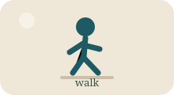
bil-mixion footJiena xi kultant immur bil-mixi.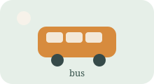
bit-tal-linjaby busKuljum ħafna nies imorru bit-tal-linja.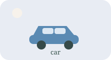
bil-karozzaby carHu jmur ix-xogħol bil-karozza.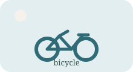
bir-rotaby bicycleXi nies imorru bir-rota meta t-temp ikun sabiħ.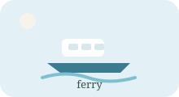
bil-ferryby ferryBil-ferry taqsam malajr minn Tas-Sliema għall-Belt.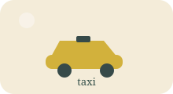
bit-taxiby taxiBit-taxi tasal komdu u malajr.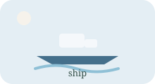
vapurship / ferryMeta mmorru Għawdex, naqbdu l-vapur.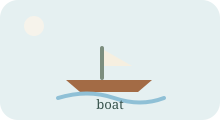
dgħajsaboatDgħajsa hija mezz ta' trasport fuq il-baħar.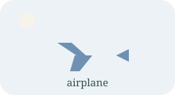
ajruplanairplaneBl-ajruplan immorru minn pajjiż għal ieħor.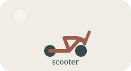
mutur / scootermotorcycle / scooterXi nies jippreferu jmorru bil-mutur.Frequency and Travel Words
kuljumevery dayKuljum naqbad tal-linja.
ta' spissoftenTa' spiss immur bil-ferry.
xi kultantsometimesXi kultant immur bir-rota.
rarirarelyRari nuża t-taxi.
malajrquicklyBil-ferry tasal malajr.
bil-modslowlyMeta hemm traffiku, il-vjaġġ ikun bil-mod.
it-traffikutrafficXi kultant it-traffiku jkun ħafna.
il-waqfabus stop / stopIl-waqfa hija viċin id-dar tiegħi.
Useful Grammar
bi + transport
bil-karozza, bil-ferry, bit-taxi, bir-rota, bit-tal-linja
Kuljum nuża ...
A safe frame for talking about everyday transport habits.
Biex immur ... nuża ...
Biex immur il-Belt, nuża l-ferry.
naqbad / nieħu / nuża / immur / nasal
Useful route verbs for simple beginner descriptions.
How To Go From Sliema To Valletta
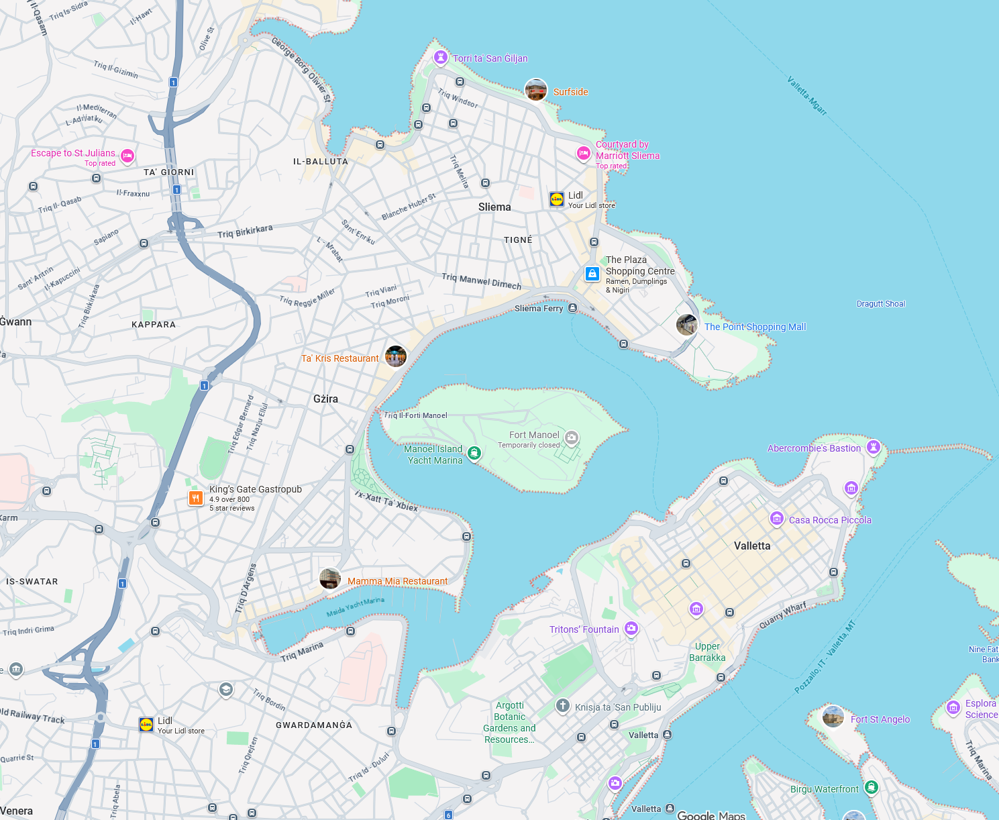
Tweġiba sempliċi
Jekk inti Tas-Sliema u trid tmur il-Belt Valletta, tista' tmur bil-ferry, bit-tal-linja, bil-karozza, bir-rota jew bit-taxi.
- Normalment il-ferry huwa l-aktar mezz qasir u prattiku għal din ir-rotta.
- Bħala eżempju ta' ħinijiet, il-ferry ta' spiss jitlaq kull tletin minuta u l-ewwel vjaġġ jista' jibda fis-06:45 mit-Tnejn sas-Sibt.
- Ir-rotta 15 bit-tal-linja hija wkoll għażla komuni minn Tas-Sliema għall-Belt, b'tluq filgħodu bħal 05:30, 06:00, 06:30 u 07:00.
Expanded Example
Jekk inti Tas-Sliema u trid tmur il-Belt Valletta, l-aktar triq faċli ġeneralment hija bil-ferry.
If you are in Sliema and you want to go to Valletta, the easiest route is generally by ferry.
L-ewwel, timxi sa Sliema Ferry jew tasal hemm bir-rota jew bit-taxi.
First, you walk to Sliema Ferry or arrive there by bicycle or taxi.
Wara, tieħu l-ferry minn Tas-Sliema għall-Belt.
After that, you take the ferry from Sliema to Valletta.
Dan il-vjaġġ huwa qasir u normalment jieħu madwar kwart.
This trip is short and normally takes about fifteen minutes.
Jekk ma tridx taqsam bil-baħar, tista' wkoll taqbad bit-tal-linja.
If you do not want to cross by sea, you can also take the bus.
Bit-tal-linja l-vjaġġ huwa itwal u jista' jieħu bejn għoxrin u tletin minuta, u xi kultant aktar minħabba t-traffiku.
By bus the trip is longer and can take between twenty and thirty minutes, and sometimes more because of traffic.
Bil-karozza jew bit-taxi tmur madwar il-port, iżda hemm ħafna traffiku f'ċerti ħinijiet u xi kultant il-parkeġġ huwa diffiċli.
By car or taxi you go around the harbour, but there is a lot of traffic at certain times and parking can be difficult.
Bir-rota tista' tmur ukoll, speċjalment jekk it-temp ikun sabiħ, imma din it-triq tieħu aktar ħin mill-ferry.
You can also go by bicycle, especially if the weather is nice, but this route takes longer than the ferry.
Alternative Routes
Bil-ferry
Bil-ferry tasal malajr u b'mod dirett.
By ferry you arrive quickly and directly.
Din hija għażla komda għax ma tridx tmur madwar it-triq kollha tal-port.
This is a comfortable option because you do not need to go all around the harbour road.
Il-vjaġġ fuq l-ilma huwa qasir u normalment jieħu madwar kwart.
The trip on the water is short and normally takes about fifteen minutes.
Bit-tal-linja
Tista' wkoll taqbad bit-tal-linja minn Tas-Sliema għall-Belt.
You can also take the bus from Sliema to Valletta.
Din hija għażla tajba jekk ma tridx tuża l-ferry jew jekk inti diġà qrib il-waqfa.
This is a good option if you do not want to use the ferry or if you are already near the bus stop.
Il-vjaġġ jista' jieħu bejn għoxrin u tletin minuta, u xi kultant aktar minħabba t-traffiku.
The trip can take between twenty and thirty minutes, and sometimes longer because of traffic.
Bil-karozza
Bil-karozza tmur madwar il-port u tasal il-Belt bit-triq.
By car you go around the harbour and arrive in Valletta by road.
Din tista' tkun għażla tajba jekk inti diġà fil-karozza jew jekk għandek ħafna affarijiet miegħek.
This can be a good option if you are already in the car or if you have many things with you.
Madankollu, it-traffiku u l-parkeġġ kultant jagħmlu l-vjaġġ aktar twil.
However, traffic and parking sometimes make the trip longer.
Bir-rota
Bir-rota tista' tmur ukoll, speċjalment meta t-temp ikun sabiħ.
You can also go by bicycle, especially when the weather is nice.
Din hija għażla sabiħa għal min iħobb jiċċaqlaq u ma jridx juża karozza.
This is a nice option for someone who likes to move around and does not want to use a car.
Normalment tieħu aktar ħin mill-ferry, iżda hija għażla tajba għal vjaġġ qasir meta t-temp ikun tajjeb.
It normally takes more time than the ferry, but it is a good option for a short trip when the weather is good.
Bit-taxi
Bit-taxi tasal komdu u mingħajr ħafna mixi.
By taxi you arrive comfortably and without much walking.
Din hija għażla tajba jekk għandek basktijiet, jekk tkun mgħaġġel, jew jekk ma tridx tistenna.
This is a good option if you have bags, if you are in a hurry, or if you do not want to wait.
Iż-żmien huwa simili għall-karozza u jiddependi mit-traffiku.
The time is similar to travelling by car and depends on traffic.
Rakkomandazzjoni sempliċi
Għal din ir-rotta, jien nagħżel il-ferry għax huwa qasir, sabiħ u prattiku.
For this route, I choose the ferry because it is short, pleasant, and practical.
Għal student tal-bidu, il-ferry spiss ikun l-aktar tweġiba sempliċi u naturali għal dan l-eżempju.
For a beginner student, the ferry is often the simplest and most natural answer for this example.
Questions and Answers
Kif tmur il-Belt?Jien immur il-Belt bil-ferry jew bit-tal-linja.
Liema mezz ta' trasport tuża kuljum?Kuljum naqbad bit-tal-linja.
Xi kultant tmur bir-rota?Iva, xi kultant immur bir-rota.
Għaliex tuża l-ferry?Għax huwa mgħaġġel u l-vjaġġ huwa sabiħ.
Meta tuża t-taxi?Rari nuża t-taxi, imma nużah meta għandi bżonn nasal malajr.
Kemm jieħu l-vjaġġ bil-ferry?Il-vjaġġ bil-ferry jieħu madwar kwart.
Story Bank
1. Kuljum ħafna nies jaqbdu bit-tal-linja.Every day many people take the bus.
2. Xi kultant immur bil-mixi.Sometimes I go on foot.
3. Rari nuża t-taxi.I rarely use a taxi.
4. Hu jmur ix-xogħol bil-karozza.He goes to work by car.
5. Oħti tmur bir-rota.My sister goes by bicycle.
6. Meta mmorru Għawdex, naqbdu l-vapur.When we go to Gozo, we take the ferry.
7. Bl-ajruplan immorru minn pajjiż għal ieħor.By airplane we go from one country to another.
8. Bil-mixi huwa tajjeb għal triq qasira.Walking is good for a short route.
9. Bit-taxi tasal komdu.By taxi you arrive comfortably.
10. Jekk inti Tas-Sliema, tista' tmur il-Belt bil-ferry.If you are in Sliema, you can go to Valletta by ferry.
11. Il-ferry jitlaq ta' spiss matul il-jum.The ferry leaves often during the day.
12. Eżempju ta' l-ewwel ferry huwa fis-06:45 mit-Tnejn sas-Sibt.An example of the first ferry is at 06:45 from Monday to Saturday.
13. Il-vjaġġ bil-ferry huwa qasir.The ferry trip is short.
14. Il-vjaġġ jieħu madwar kwart.The trip takes about fifteen minutes.
15. Tista' wkoll taqbad bit-tal-linja minn Tas-Sliema.You can also take the bus from Sliema.
16. Bħala eżempju, ir-rotta 15 għandha tluq fil-05:30, 06:00 u 06:30.As an example, route 15 has departures at 05:30, 06:00 and 06:30.
17. Bit-tal-linja l-vjaġġ jista' jieħu bejn għoxrin u tletin minuta.By bus the trip can take between twenty and thirty minutes.
18. Xi kultant jieħu aktar minħabba t-traffiku.Sometimes it takes longer because of traffic.
19. Bil-karozza tmur madwar il-port.By car you go around the harbour.
20. Bil-karozza l-problema tista' tkun il-parkeġġ.By car the problem can be parking.
21. Bir-rota l-vjaġġ huwa itwal mill-ferry.By bicycle the trip is longer than the ferry.
22. Imma bir-rota hija għażla sabiħa meta t-temp ikun tajjeb.But by bicycle it is a nice choice when the weather is good.
23. Jien inħobb il-ferry għax nara l-baħar.I like the ferry because I see the sea.
24. Mill-ferry tara veduta sabiħa tal-port.From the ferry you see a beautiful view of the harbour.
25. It-taxi hija tajba meta għandi bagalja.A taxi is good when I have luggage.
26. Meta għandi ftit ħin, nuża t-taxi.When I have little time, I use the taxi.
27. Jekk it-triq hija qasira, nista' nimxi.If the route is short, I can walk.
28. Għal din it-triq minn Tas-Sliema għall-Belt, il-ferry huwa l-aktar prattiku.For this route from Sliema to Valletta, the ferry is the most practical.